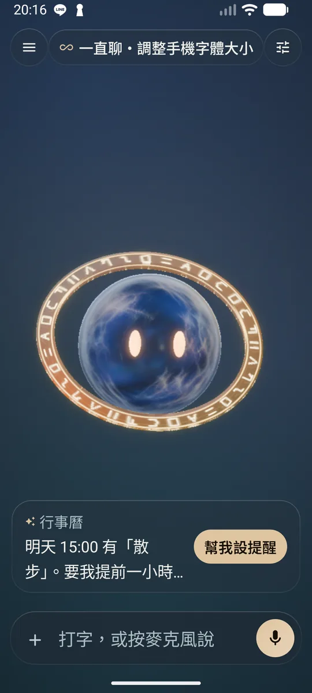
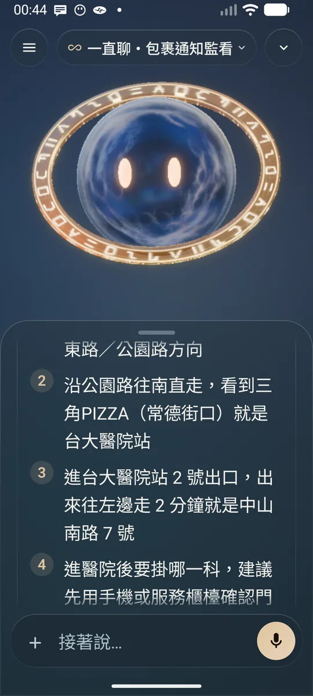
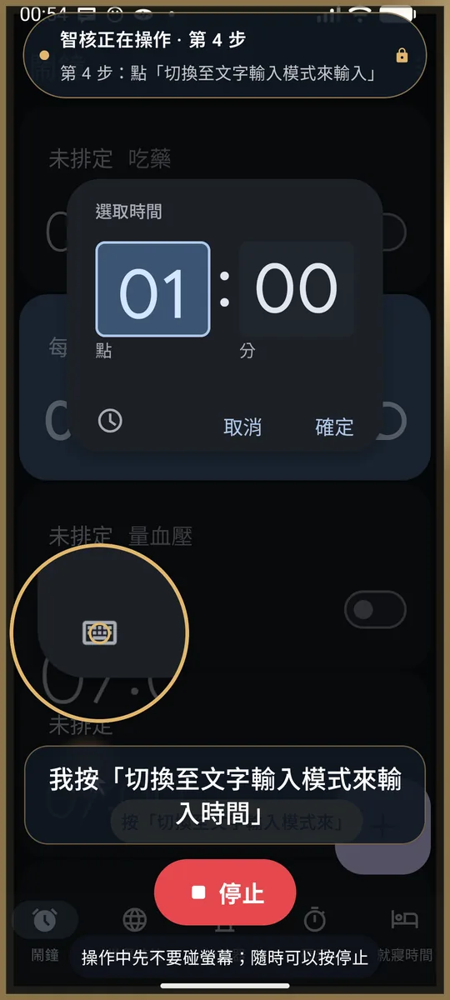
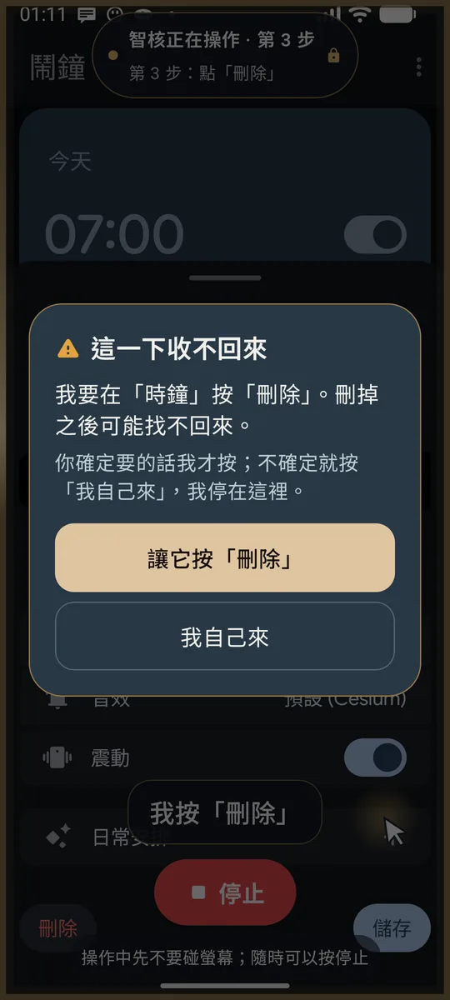

01坐在你旁邊
說明寫得再清楚，讀完之後，人還是得自己回到螢幕前面。PalmCore 的做法是陪著：你要做一件事，它跟你一起一步一步做，照你的速度。
我們心裡想的，是一個有耐心的人坐在你旁邊。他不催你，也不會因為你問了第二次就換一種口氣。
產品 研發中
住在手機裡的 AI 夥伴，為不熟悉智慧型手機的人而做。
現在有什麼
下面是目前這一版在 Android 手機上的實際畫面，不是示意圖。




目前量過的
文字離開手機、送到雲端模型之前，手機上有一個小模型先找出個人資料並遮起來。我們用它在訓練時沒看過的資料來測。
2026 年 10 月 10 日量的，用的是跟 App 裡同一份量化模型與規則。這是我們自己的測試集，沒有團隊以外的人驗證過；這一版模型在手機上重跑一次還沒做。
電話號碼那部分的規則是公開的：GitHub 上的 tw-phone
為誰而做
現在的手機預設你已經知道很多事：三條線的圖示可以點、畫面往下拉會更新、跳出來的視窗哪一個該按、哪一個不要理它。這些事沒有人教，都是用久了才會。
對不是從小用到大的人來說，每一步都可能卡住，而且卡住的時候旁邊常常沒有人。很多長輩就在這個處境裡：掛號、繳費、和家人聯絡，一件一件搬進了手機，沒有人問過他們要不要。
我們不把他們當成需要被照顧的人。他們這輩子處理過的事，比一支手機複雜得多。他們想要的是自己把事情辦好，不必每次都開口拜託別人。PalmCore 是為這件事做的。
三個核心
說明寫得再清楚，讀完之後，人還是得自己回到螢幕前面。PalmCore 的做法是陪著：你要做一件事，它跟你一起一步一步做，照你的速度。
我們心裡想的，是一個有耐心的人坐在你旁邊。他不催你，也不會因為你問了第二次就換一種口氣。
多數軟體在你卡住的時候，只會把同一句提示再顯示一次。PalmCore 把卡住當成它該出手的時候：有人接手；家人不在身邊，也能從遠端幫上忙。
我們給自己的要求是，不管走到哪一步，使用者都不該一個人對著螢幕不知道怎麼辦。
向人求助最累的地方，常常是得從頭解釋一遍。PalmCore 記得你說過的事，下次不必重講。
記得一個人是有責任的。所以這一條和下面的隱私立場綁在一起，不能分開談。
隱私立場
一個陪你用手機的夥伴，一定會碰到很私人的東西。我們的立場是：個人資料先在手機上處理，能不離開手機就不離開。
這是設計的起點，不是做完之後才補上的設定。它讓不少功能變得比較難做。我們認為這個代價該由我們來付，不該轉給使用者。
PalmCore 上架時，會有一份產品自己的隱私權政策，具體說明收集哪些資料、存在哪裡、保留多久。
設計立場
目前階段
研發中
PalmCore 現在沒有可以下載的版本，也沒有候補名單。這個階段我們不公開產品畫面與技術細節；等到能負責任地講清楚，會更新在這一頁。
想進一步了解或談合作，請寫信給我們。